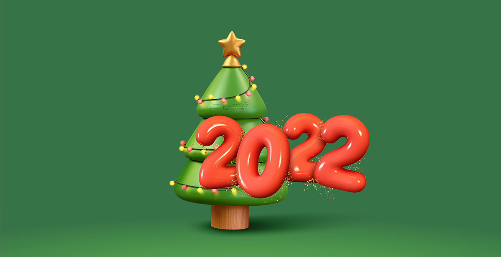

تپسی
اپلیکیشن درخواست خودرو و پیک
تپسی
اپلیکیشن درخواست خودرو و پیک

تپسی کلاسیک

موتوپیک

اتوپیک

تپسی پلاس

تپسی تلفنی

همیار

همخط

تاکسی

تپسی لاین
با سرویس کلاسیک تپسی، یک خودروی اختصاصی برای رسیدن به مقصدتان دارید. تپسی کلاسیک، راهی سریع و آسان برای سفرهای درونشهری در هر ساعتی از روز است. در این سرویس، شما امکان تعیین دو یا چند مقصد و همچنین توقف در مسیر را دارید.

با استفاده از سرویس موتوپیک، بستهها و مرسولاتتان با پیک موتور به مقصد ارسال میشوند. این سرویس مناسب زمانی است که میخواهید مرسوله سریعتر به مقصد برسد. در این سرویس، شما میتوانید مسیر رسیدن مرسولهتان به مقصد را به صورت لحظهای روی نقشه دنبال کنید.
اتوپیک سرویسی برای ارسال بستههای شما با خودرو است. این سرویس، برای زمانی مناسب است که بستههای شما، با موتور قابل ارسال نیستند و یا در حین جابجایی، نیاز به مراقبت بیشتری دارند. در این سرویس نیز امکان رصد لحظه به لحظه موقعیت مکانی مرسوله تا زمان رسیدن به مقصد فراهم است.

در سرویس پلاس تاکسی اینترنتی تپسی، خودرویی با مدل بالاتر و عمر کمتر، به دنبال شما خواهد آمد. همچنین، رانندگان این سرویس بالاترین امتیاز را از مسافران دریافت کردهاند. در این سرویس که در حال حاضر در تهران فعال است، امکان تعیین چند مقصد یا توقف در حین سفر، وجود دارد.

سرویس تپسی تلفنی یا ۱۶۳۰، این امکان را به شما میدهد که بدون نیاز به اینترنت و اپلیکیشن، درخواست خودرو بدهید. این سرویس تاکسی تلفنی مناسب زمانی است که به هر دلیلی دسترسی به اینترنت یا اپلیکیشن ندارید. همچنین سرویس تلفنی تپسی، راه حلی مناسب برای افرادی است که کار کردن با اپلیکیشنهای موبایلی برایشان راحت نیست.

سرویس همیار تپسی، به جای شما خرید میکند. کافیست فروشگاه مورد نظر خود را به عنوان مبدا مشخص کرده و لیست خریدتان را داخل اپ وارد کنید. این خریدها میتواند از سوپرمارکت یا داروخانه مورد نظر شما باشند.

سرویس همخط تپسی شما را با مینیبوس به مقصد میرساند. با استفاده از سرویس همخط بعد از انتخاب مسیر سفر، بلیتتان را خریداری کنید و سریعتر و راحتتر به مقصد برسید. این سرویس خطی بسیار ارزانتر از دیگر سرویسهای تپسی است و شما را سریعتر و راحتتر از حملونقل عمومی به مقصدتان میرساند. شما میتوانید از قبل بلیت هم خط را رزرو کنید و با رعایت فاصله اجتماعی به مقصد برسید. سرویس مینی بوس آنلاین فعلا فقط در تهران فعال است.
در سرویس تاکسی تپسی، تاکسیهای زرد یا سبز شما را به مقصدتان میرسانند. این سرویس در حال حاضر در تهران فعال است و چنانچه به دلایلی مانند ورود به محدوده طرح ترافیک یا طرح آلودگی هوا، ترجیح بدهید از تاکسی برای رفتوآمدتان استفاده کنید، گزینه مناسبی خواهد بود.

تپسی لاین سرویسی است که امکان سفر اشتراکی را برایتان فراهم میکند. در این سرویس شما با مسافر دیگری که هممسیرتان است، همسفر خواهید بود و هزینه سفرتان تقسیم میشود. این سرویس در حال حاضر به دلیل شرایط همهگیری بیماری کرونا از دسترس خارج شده اما با بهبود شرایط میتوانید از سرویس لاین استفاده کنید.

پنل سازمانی تپسی، یک سامانه تحت وب است که به سادگی امکان درخواست همزمان تعداد نامحدودی خودرو و پیک را برای کسبوکارها و سازمانها فراهم میکند. و با استفاده از آن میتوانید ماموریت های درونشهری و ارسال کالاهای خود را به سادگی مدیریت کنید.


کاربران، کسبوکارها و سازمانها میتوانند به تعداد و مبلغ مورد نظرشان، کد اعتبار یا کد تخفیف تپسی تهیه کرده، برای خود، پرسنل و یا مشتریانشان استفاده کنند و از تخفیفهای ویژه تپسی نیز بهرهمند شوند.
این کدها امکان سفارشیسازی بر اساس مبدا، مقصد، زمان، درصد و مبلغ را دارند.
امکانات ویژه امنیت سفر، شامل اشتراک سفر و پشتیبانی ۲۴ ساعته تیم متخصصین امنیت تپسی
امکان درخواست خودرو بدون نیاز به اینترنت و اپلیکیشن، از طریق تماس با شماره ۱۶۳۰
امکان استفاده کاربران نابینا و ناشنوا از اپلیکیشن تپسی و عدم کسر کمیسیون از سفر مسافران ویلچردار
سهولت استفاده از اپلیکیشن با پیشنهاد مبدا و مقصد سفر، مقاصد منتخب و پیشنهادهای ویژه شما
رانندگان (سفیران) بهعنوان همکاران تپسی، جایگاه ویژهای برای شرکت دارند. به همیندلیل مزایای مختلفی برای آنها در نظر گرفته شده است.

اگر شما هم عاشق کتاب باشید و دلتان بخواهد غرق دنیای زیبای داستانها شوید، قطعا مراجعه به کتابفروشی برایتان لذتبخش است. حالا تصور کنید که به جای یک کتاب فروشی معمولی به باغی از کتاب بروید. پس بیایید کمی بیشتر با کنار گوشههای باغ کتاب تهران آشنا شویم. باغ کتاب تهران یکی از بزرگترین مراکز
با نزدیک شدن به بازه کریسمس و سال نو میلادی در همه کشورها شور و حال جذابی برپا میشود. این شور و حال در کشورهایی که چند ملیتی هستند، بیشتر به چشم میآید. ایران، با داشتن آمار بالای ارامنه و افرادی با دین و ملیتی غیر از اسلام و ایرانی، از این قاعده مستثنا نیست
تا همین چند سال پیش، سینماها تنها یک یا دو سالن برای پخش فیلم و یک بوفه برای فروش تنقلات داشتند و شما چند دقیقه پیش از شروع فیلم وارد سینما میشدید و بعد از اتمام فیلم هم سینما را ترک میکردید. اما در سالهای اخیر با معرفی پدیده جدیدی به نام پردیس های سینمایی